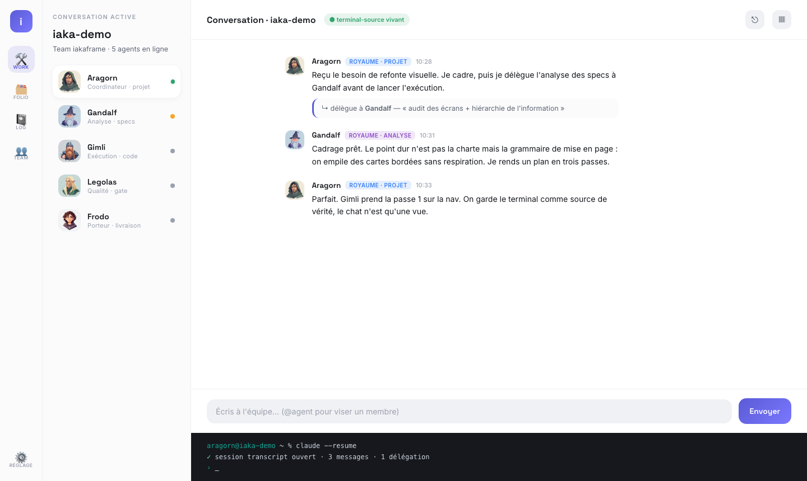
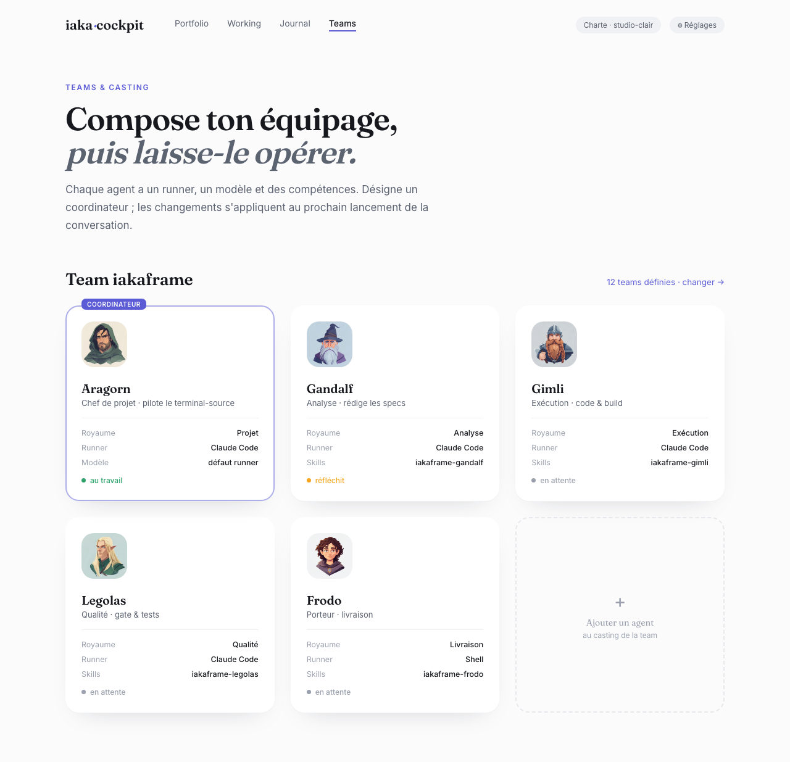
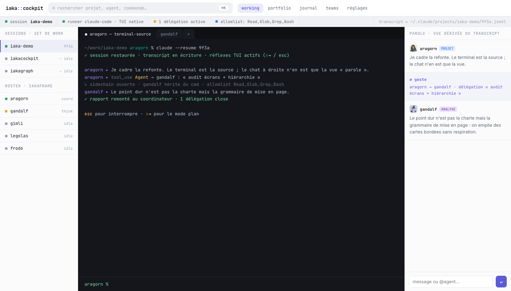
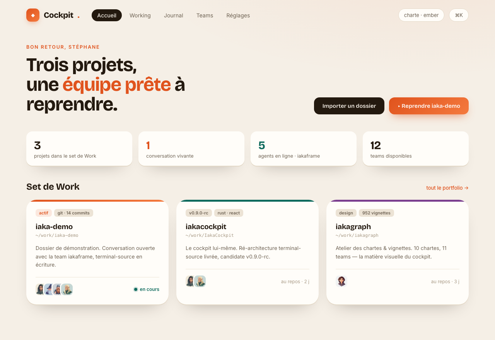
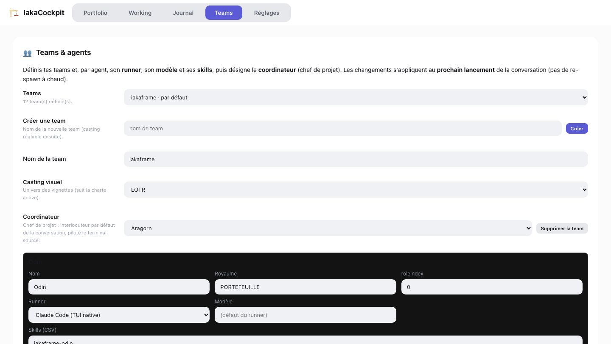
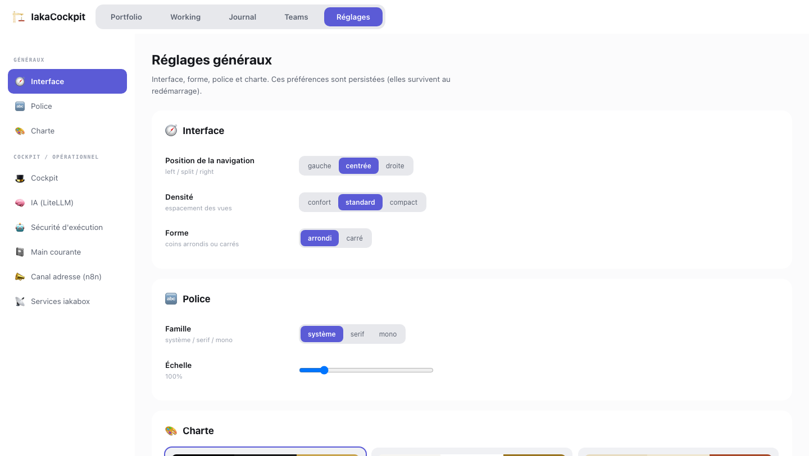

Studio Loki · 2026-06-27. Diagnostic : l'app n'est pas « moche », elle est muette
(pas de voix typo, pas de respiration, grammaire « admin bordé »). Quatre directions, très distinctes
en ergonomie ET en look. A·B·C en charte studio-clair ; D en charte neuve « Ember ».
Audit complet : audit.md. Chaque mock est un HTML autonome (clique « ouvrir »).
Parti-pris : espace de travail unifié. On supprime les onglets-pilule (rail d'icônes), le projet/roster/chat/terminal cohabitent dans un seul écran. Typo géométrique Space Grotesk + Inter. Aéré, sans-bord.

Parti-pris : respiration maximale, magazine premium. Nav en liens-texte (zéro caisson), héros serif, colonne de lecture, Teams vu comme une grille de casting qu'on embrasse d'un coup. Display serif Fraunces.

Parti-pris : clavier-first, dense, terminal-source en HÉROS. Palette ⌘K, bandeau de statut à LEDs, le terminal occupe le centre (source de vérité) et le chat n'est qu'un rail « vue dérivée du transcript ». Tout en JetBrains Mono, panneaux plats.

Parti-pris : donner un visage au produit. Charte inventée « Ember » : papier chaud + encre + braise,
display grotesque Bricolage. Vue d'accueil chaleureuse (stats + cartes projets + CTA « reprendre »). Voir mock-D-charte.md.

Pour comparaison : la grammaire actuelle « cartes bordées / formulaires pleine largeur / onglets pilule / une seule voix typo ».

